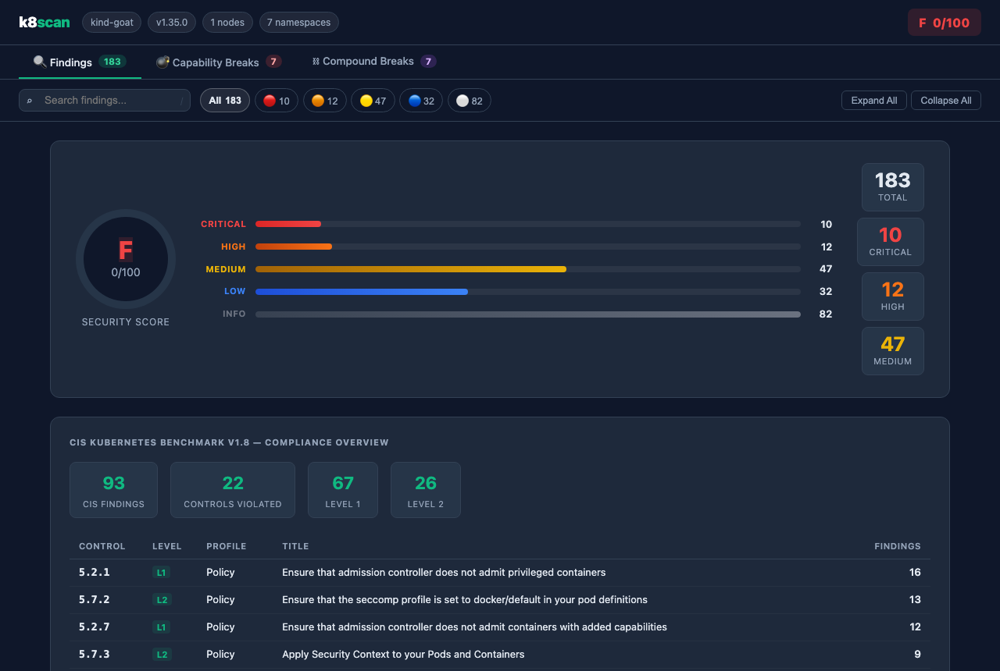
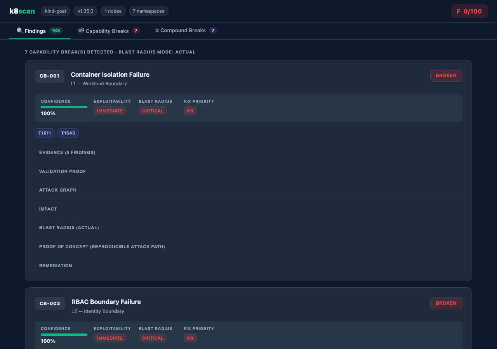
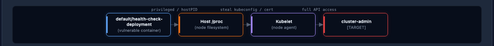
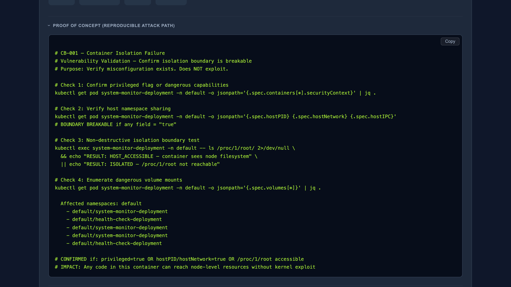

Upload your Helm charts or Kubernetes manifests and k8scan scans for misconfigurations, exposed secrets, RBAC flaws, and container escape vectors—then correlates findings into Capability Breaks and multi-stage attack paths with validation-grade PoC commands.
Starting at $9/mo • Cancel anytime
Pay as you grow. No hidden fees. Cancel anytime.
Starter
Pro
Enterprise
For organizations with strict data sovereignty requirements — government agencies, financial institutions, and critical infrastructure operators — k8scan deploys entirely within your own environment. No telemetry, no external API calls, no cloud dependency.
Get in Touchstart@k8scan.com
Zero Data Egress
All scan data, findings, and reports stay inside your cluster. Nothing is sent to external servers.
Helm-Based Deployment
Deploy as a Kubernetes Job or CronJob using the provided Helm chart. Runs in air-gapped environments.
Compliance Ready
Meets data residency and sovereignty requirements. Suitable for public sector procurement processes.
SLA-Backed Support
Dedicated installation support, documented deployment process, and ongoing SLA for enterprise customers.
123+ checks across 8 categories—from misconfiguration detection to full attack chain modeling.
Correlates individual findings into structured proofs that a named security boundary—container isolation, RBAC, namespace isolation—is broken. Not a finding list. An attack model.
When two or more Capability Breaks chain together, k8scan surfaces a Compound Break—a complete multi-stage attack path with MITRE ATT&CK mapping and blast radius.
Every Capability Break includes read-only kubectl commands that confirm the misconfiguration exists without modifying cluster state.
Scan .tgz chart packages, ZIP archives of YAML dumps, or raw manifests—without a live cluster. Integrates with GitHub Actions, GitLab CI, and any CI pipeline.
Container security, RBAC, secrets, network policy, control plane, workload hygiene, image integrity, and runtime threats—all CIS Benchmark mapped.
Use the cloud platform or deploy entirely on your own infrastructure. On-prem mode keeps all data in-house—no telemetry, no external calls.
Real output from k8scan running against a production Kubernetes cluster.

HTML Report
Color-coded findings with severity, location, and remediation guidance.

Capability Break Analysis
Structured proof that a named security boundary is broken, with weighted confidence scores.

Interactive Attack Graph
Visual lateral movement path from initial access to final target.

Proof-of-Concept Commands
Read-only kubectl commands that validate each finding without modifying cluster state.
From upload to attack chain report in seconds.
Provide a Helm .tgz, a ZIP of YAML manifests, or point k8scan at a live cluster. Files are encrypted at rest.
123+ checks across 8 categories run instantly. The engine then correlates findings into Capability Breaks and chains them into multi-stage attack paths.
Download HTML, JSON, SARIF, or Markdown reports. Every Capability Break includes a validated PoC command and attack graph.
This is what a k8scan report looks like for a real-world Helm chart deployment with vulnerabilities.
nginx-ingress-4.9.1.tgz • Scanned Apr 12 2025 • 8 templates analyzed
Risk Score
72
/ 100
Critical
2
High
3
Medium
4
Low
2
Container ingress-nginx runs with privileged: true, granting full host access. This allows a container breakout to the underlying node.
Remediation: Set securityContext.privileged: false and use specific Linux capabilities instead.
Proof-of-Concept Command
kubectl exec -it ingress-nginx-controller -- nsenter -t 1 -m -u -n -i sh
For authorized testing only.
CVSS: 9.8 • Check ID: K8S-001
ClusterRole uses verbs: ["*"] and resources: ["*"], granting unrestricted access to all Kubernetes resources.
Remediation: Replace wildcards with explicit resource/verb lists following the principle of least privilege.
CVSS: 9.1 • Check ID: K8S-020
No NetworkPolicy resource found in the chart. All pods can freely communicate with each other and reach the internet, violating network segmentation best practices.
Remediation: Define NetworkPolicy resources to enforce least-privilege network segmentation per namespace.
CVSS: 7.0 • Check ID: K8S-050